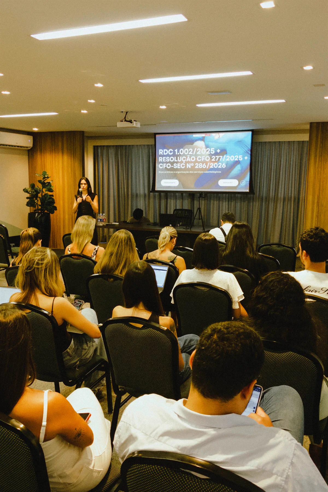
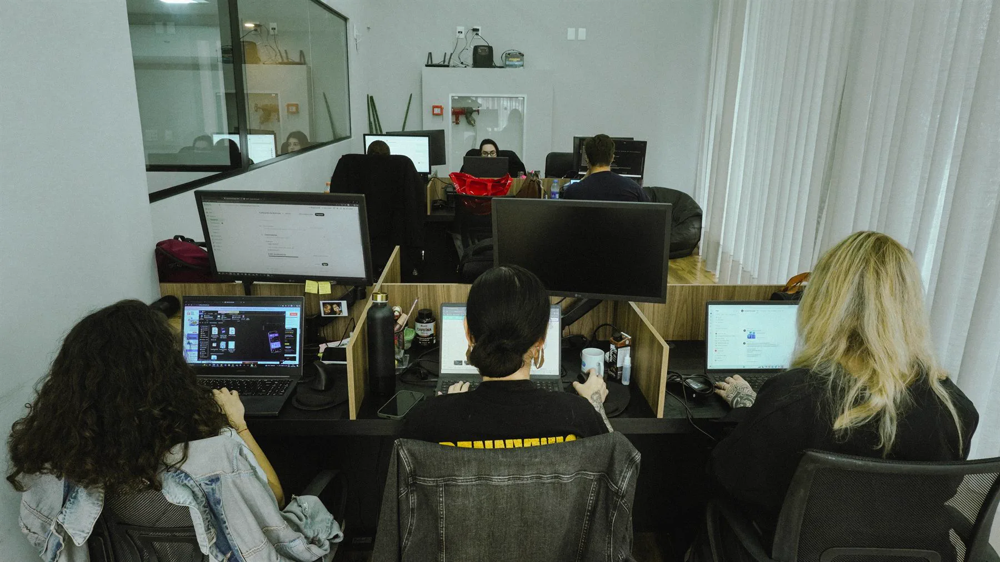
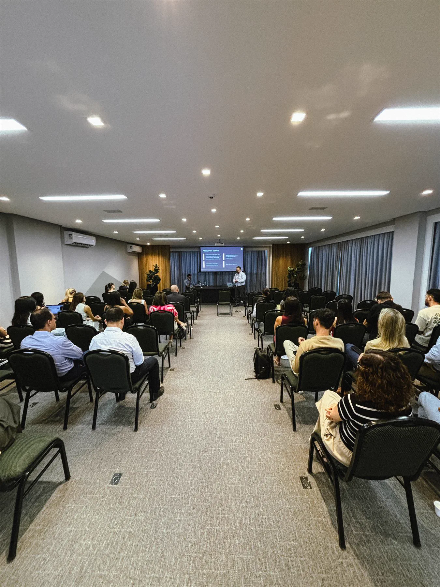
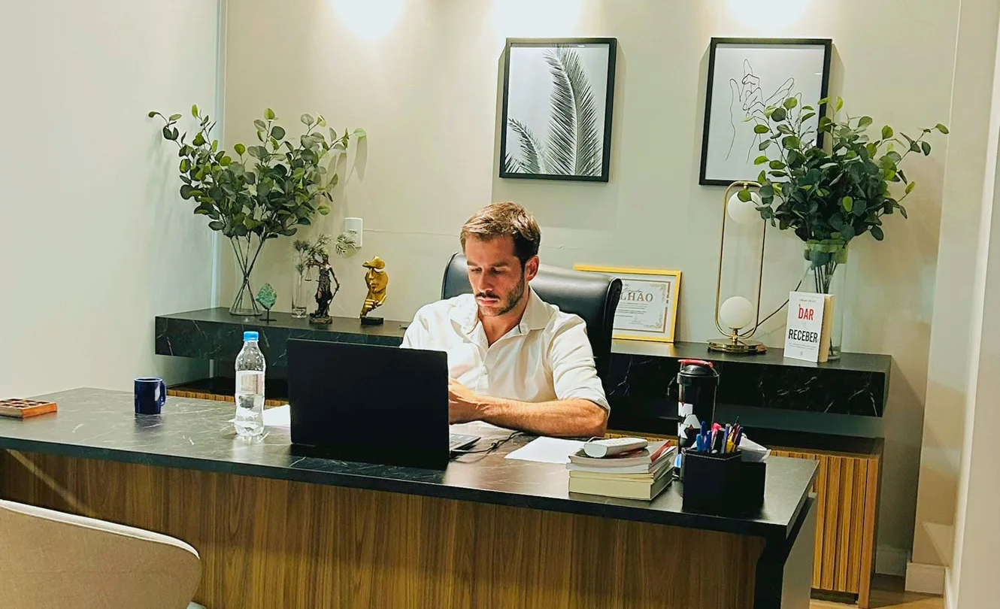
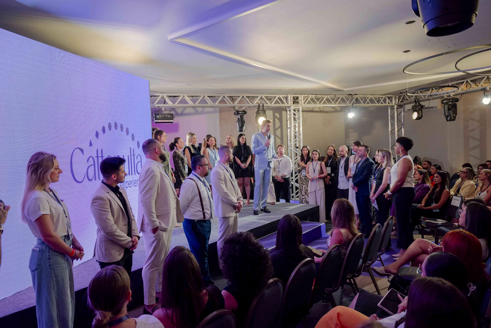
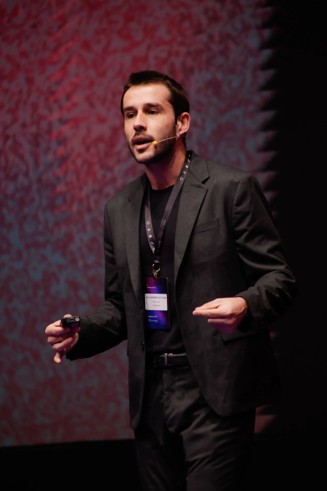

As clínicas que mais crescem no país não esperam o processo chegar para agir. Elas têm um time cuidando disso todo mês, antes que vire notícia, antes que vire prejuízo.
escritório do Brasil dedicado integralmente ao Direito na harmonização
advogados e especialistas trabalhando pela sua proteção
processos acompanhados pelo time em todo o Brasil
A estética ainda briga por credibilidade. Ter um escritório que luta ao seu lado muda como você é vista, e principalmente como você se sente.




Quem executa a jornada · +60 advogados e especialistas dedicados à harmonização
Crescem em ritmo constante, sem sustos no meio do caminho. Não param por causa de um paciente insatisfeito. Não têm sócio brigando publicamente com sócio. Isso vem de um cuidado jurídico que acompanha o negócio todo mês, não de sorte.
Você não precisa se desgastar sozinha com paciente insatisfeito. Alguém pode assumir essa conversa difícil por você.
O que a assessoria cobre todo mês
Um time de +60 pessoas monitorando sua clínica todos os meses.
Atualização contínua com as resoluções dos conselhos e da ANVISA.
Processos ilimitados, judiciais, éticos e trabalhistas, inclusos.
Resolução de paciente-problema antes de virar processo.
Análise de redes sociais e reputação online.
Advogado de verdade te atendendo. Não um chatbot, não um estagiário sozinho.
Cada caso resolvido pelo time vira prevenção pro cliente seguinte.
Sem apoio jurídico, é fácil ceder à pressão de um paciente insatisfeito, mesmo sabendo que você fez certo.

Advogado generalista usa o seu caso pra entender o que vai defender. O nosso time já resolveu casos parecidos mil vezes.

Poucos profissionais entendem tão profundamente os bastidores jurídicos, comerciais e regulatórios da harmonização quanto Guilherme Cattani.
Advogado especialista em Direito Médico Hospitalar e Direito Tributário, mestre em Gestão de Políticas Públicas, professor e empresário do setor da saúde e estética, Guilherme é fundador da Juk Cattani e da Academia da Independência.
Reconhecido como o primeiro advogado focado em harmonização facial do Brasil, é autor do primeiro livro de Direito na harmonização do país, coautor de outras 7 obras de estética facial e corporal e uma das vozes mais atuantes na defesa, orientação e valorização dos profissionais da área.
As clínicas que ele acompanha já não precisam de socorro. Precisam de alguém olhando pra frente com elas.
Advogado generalista sabe leis. Advogado especializado sabe estética, conhece as resoluções do seu conselho, da Vigilância Sanitária e já viu dezenas de casos parecidos com o seu. As clínicas que crescem mais rápido têm um time que entende do mercado tanto quanto elas mesmas.
Os processos mais comuns não começam com má-fé. Começam com um resultado abaixo da expectativa, um print tirado de contexto, uma avaliação no Google. A Juk identifica esses sinais e resolve antes que virem notícia manchando a sua reputação.
Uma única indenização por resultado estético gira entre R$ 30 mil e R$ 200 mil. Uma exposição pública custa anos de reputação. A assessoria existe para essa conta nunca chegar até você.
Não vai. A assessoria começa a partir das informações que você já tem sobre sua clínica, procedimentos e equipe. O time se organiza, você continua atendendo.
A fiscalização não avisa. O PL 1027/2025, as resoluções recentes dos conselhos e as operações da ANVISA mostram que o ciclo de regulação está acelerado. Quem já tem esse cuidado sabe da mudança antes dela virar exigência.
O cuidado jurídico contínuo que sustenta as clínicas mais respeitadas da harmonização, pelo time que mais entende de estética no Brasil.
Faça parte do time dos negócios mais valiosos da harmonização.